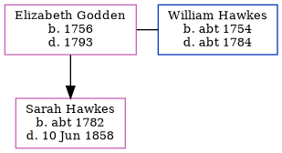

Elizabeth Hawkes (née Godden) 1756 - 1793
[ Home ] | [ Calendar ] | [ Surnames Index ] | [ Errors ] | [ Family History ]Elizabeth Godden, the 5 times great-grandmother of Nigel Horne, was born in Ash, Kent, England in 1756 and married William Hawkes (with whom she had 1 child, Sarah Anne) in Ash on 16 Aug 17771, which is also where she died in 1793.
Children
- Sarah Anne was born c. 1782
Citations
- Kent, England, Tyler Index to Parish Registers, 1538-1874 Online publication - Provo, UT, USA: Ancestry.com Operations, Inc., 2010. This collection was indexed by Ancestry World Archives Project contributors.Original data - Frank Watt Tyler. The Tyler Collection. Canterbury, Kent, England: The Institute of Herald
Family Tree
Map
Generated by ged2site. Last updated on Jul 3, 2024
Known Issues
Birth date (1756) has no citations
Death date (1793) has no citations